Exotic Market 티어 리스트
Exotic Market은 네 번째 Spelunking 보스에서 해제되는 주간 초기화 상점으로, 특정 작물 거래에 대한 순환 보너스를 제공합니다. 주간 거래 횟수는 제한되지만 World 7 Legend 탤런트, 이벤트 상점, Research를 통해 늘릴 수 있으며, 작물을 소모하지 않는 무료 거래도 추가됩니다. Exotic Market은 감소 수익이 있으므로 아래의 대략적인 티어 리스트 순서로 구매를 분산하세요.
파밍 Exotic Market 티어 리스트
Exotic Market을 강화하는 업그레이드, Land Rank 데이터베이스 보너스 극대화, 그리고 필요에 맞게 조정할 수 있는 파밍 진행 향상에 집중하세요. Stalk Value처럼 일부 업그레이드는 변형(I, II, III)이 있으며 숫자가 높을수록 더 강합니다.
| 이름 | 효과 | 레벨 1000 값 |
|---|---|---|
| Freexotic | Exotic 구매 시 구매 저장 확률 +% | 15 |
| Better Exotic | Exotic 업그레이드 구매 시 추가 레벨 +% | 35 |
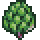 Datadigging | Land Rank Database 5번째 열 최대 레벨 증가 | 2.5 |
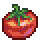 Plump Database | Land Rank Database의 보너스 +% 증가 | 30 |
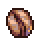 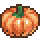 Stalk Value | 작물 가치 최대 상한 +% 증가 | 25 / 35 / 60 |
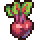 Largumes | Lugumulyte에서 얻는 콩 x배 증가 | 1.45 / 1.65 |
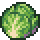 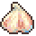 Evergrow | 모든 작물의 Overgrowth 확률 x배 증가 | 1.5 / 1.75 |
| Scienterrific | Crop Scientist의 보너스 +% 증가 | 10 |
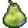 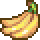 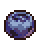 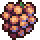 Sproutluck | 작물 진화 확률 x배 증가 | 3.5 / 4.0 / 4.5 / 5.0 |
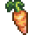 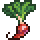 Vigouroot | 모든 구획의 Land Rank EXP 획득 x배 증가 | 1.5 / 1.65 |
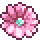 Better Night | Night Market 업그레이드 비용 +% 감소 | 20 / 27.5 |
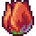 Better Day | Day Market 업그레이드 비용 +% 감소 | 20 / 27.5 |
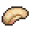 Farmer Knowhow | 모든 캐릭터의 Farming EXP 획득 x배 증가 | 1.6 |
| Gogogrow | 모든 구획의 성장 속도 +% | 25 |
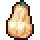 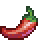 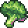 Legumioso | Legumulyte에서 추가 콩 획득 +% | 125 / 175 / 210 |
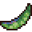 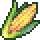 Double Petal | 수확 시 작물 가치 2배 확률 +% | 25 / 35 |
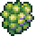 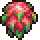 Stableroot | 모든 구획의 Land Rank EXP 획득 +% | 125 / 175 / 200 |
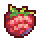 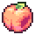 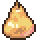 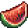 Geneology | Farming 레벨 50~250 초과 시 레벨당 작물 진화 확률 +% | 3 / 6 / 10 / 14 / 25 |
| Bountiful | 완전히 성장 시 작물 +1 확률 +% | 25 / 30 / 35 |
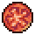 Farmer Brain | 모든 캐릭터의 Farming EXP 획득 +% | 150 |
비파밍 Exotic Market 티어 리스트
이 우선순위는 계정 진행에 따라 달라지며, 대부분의 비파밍 보너스는 스케일링이 약하므로 파밍 보너스를 먼저 집중하는 것을 권장합니다.
| 이름 | 효과 | 레벨 1000 값 |
|---|---|---|
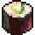 Prisma Petal | Prisma Bubble 보너스 +% | 1 |
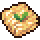 Exalted Eldou | Exalted Stamp 보너스 +% | 1 |
| Sap Surge | Spelunking에서 발견한 Amber x배 | 3.5 |
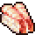 Gravel Pound | 총 Spelunking POW | 2.5 |
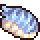 Grapevine | 마을 주민 EXP 획득 x배 | 1.35 |
| Snapegrass | Sneaking의 Jade 획득 x배 | 8.5 |
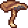 Pommelion Seed | 드롭률 +% | 12.5 |
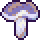 Purple Grass | Arcane Cultist Tachyons +% | 80 |
| Force of Nature | Windwalker Dust +% | 80 |
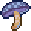 Bonemeal Soil | Deathbringer Bones +% | 80 |
| Studious Spore | Spelunking EXP 획득 +% | 100 |
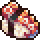 5 Leaf Clover | 유물 발견 확률 x배 | 1.15 |
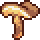 Gold Figleaf | Arcade에서 Gold Ball 획득 +% | 5 |
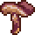 Potent Hemlock | Kill per Kill +% | 17.5 |
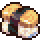 Briar Patch | 총 데미지 +% | 1,000 |
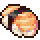 4 Leaf Clover | Gaming의 Palette Luck +% | 75 |
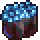 Intelleaf | 클래스 EXP +% | 150 |
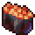 Bud Courier | Snail Mail 2배 확률 +% | 17.5 |
| Hollow Trunk | 항아리 수집품 확률 x배 | 2 |
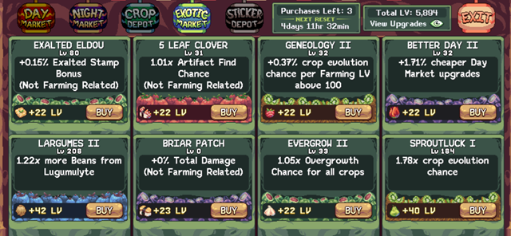
Night Market 우선순위
Night Market은 Magic Bean 거래를 통한 파밍 강화를 제공하며, Day Market처럼 조금씩 골고루 구매하는 것이 좋습니다. 간단한 규칙은 다음과 같습니다:
- 가능해지면 Overgrowth와 Land Rank를 해제하세요.
- OG Fertilizer, Speed GMO, Evolution GMO의 콩 비용을 균형 있게 맞추세요.
- 작물을 10만 개 이상 쉽게 생산할 수 있게 되면 위 업그레이드들과 함께 Super GMO도 균형을 맞추세요.
- EXP GMO와 Value GMO는 콩 비용이 다른 업그레이드의 약 10%일 때 레벨을 올리세요.
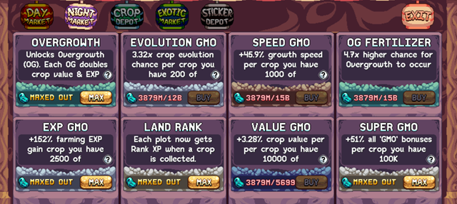
참고로 Value GMO(작물 가치 배율)는 10,000에서 상한이 있으며, Stalk Value Exotic Market 업그레이드를 구매하기 전까지 Farming의 Skills Info UI에서 확인할 수 있습니다.
Land Rank 우선순위
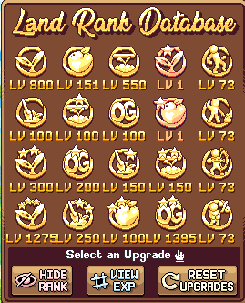
Land Rank는 특정 집중 방향, 사용 가능한 Land Rank 업그레이드, 사용 가능한 총 Land Rank 레벨에 따라 우선순위가 복잡합니다. 언제나 최선의 배분을 원한다면 공식 디스코드 가이드 섹션에 Land Rank 최적화 도구가 있으며, 주간 초기화를 활용해 집중 방향을 전환할 수도 있습니다.
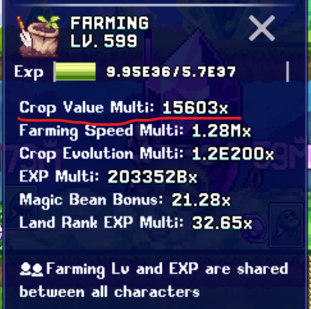
아래는 중요한 5번째 열 비파밍 버프를 최대화한 후 적당히 효과적인 구성을 원하는 분들을 위한 균형 잡힌 추천 구성입니다.
먼저 현재 달성 가능한 최대 작물 종류를 기준으로 작물 가치 배율 상한(기본 10,000)에 도달할 때까지 생산 버프에 포인트를 투자하세요. 예를 들어 2,000 포인트가 남는다면 토양 EXP 20%(400포인트), Overgrowth 50%(1,000포인트), Farming EXP 10%(200포인트), 진화 20%(400포인트)로 배분해 감소 수익에 맞게 균형을 맞추세요. 1,000 Overgrowth 포인트는 1/2/4 비율로 Overgrowth Boost(142), Overgrowth Megaboost(284), Overgrowth Superboost(574)에 투자합니다.
| 업그레이드 유형 | Land Rank 포인트 배분 | 비율 (Boost/Mega/Super/Ultra) |
|---|---|---|
| Production | 작물 가치 배율 상한 도달까지 필요한 만큼 | 1/0/1 |
| Soil EXP | 20% | 3/1/2 |
| Overgrowth | 50% | 1/2/4 |
| Farming EXP | 10% | 1/1/2 |
| Evolution | 20% | 1/1/1/1 |
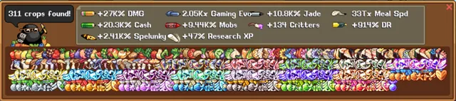
Farming 팁
- 핵심 파밍 루프: 가능한 한 많은 진화를 달성하세요. 이는 Scientist Blobulyte에서 계정 전체 보너스를 해제하고, 최소 작물 수에 도달하면 많은 업그레이드가 기반하는 현재 진화 수를 기반으로 Night Market 해제를 늘립니다. 더 이상 작물 진화를 진행할 수 없다면(비파밍 진화 출처는 Idleon 위키 참조) Day Market 업그레이드를 밀어붙이고, 결국 콩 거래를 통해 Night Market을 진행한 후 파밍을 리셋해 과정을 반복하세요.
- Day Market: 특정 작물을 다양한 파밍 보너스로 거래하는 상점으로, 점차 늘어나는 작물 수와 더 어려운 진화 작물이 필요합니다. 각 업그레이드 사이의 소요 시간을 고려하고, 24시간 이상 걸린다면 다른 Day Market 업그레이드나 Night Market으로 넘어가세요.
- Night Market: Night Market은 작물 대신 Bean 화폐를 사용합니다. Bean은 World 6 상점에서 구매한 Crop Transfer Ticket을 Troll Broodnest 맵의 Legumulyte 발 아래에 드롭하면 얻을 수 있습니다. 이는 인벤토리의 모든 작물(현재 성장 중인 것 제외)을 소모해 파밍 진행을 효과적으로 리셋하지만, 더 빨리 진행하기 위한 새 업그레이드를 얻습니다.
- Exotic Market: World 7에서 Farming 레벨 120에 Spelunking을 통해 해제되며, 다른 게임 메커니즘 보너스와 함께 추가적인 파밍 업그레이드 레이어를 제공합니다. Day Market과 유사하게 특정 작물 종류 전체를 보너스와 교환하며, 작물 수와 World 7 Legend 탤런트에 따라 레벨이 올라갑니다.
- Instagrow 하나 구매하기: Instagrow는 콩 거래 이후 파밍을 더 빠르게 진행하고 느린 메달 작물을 키우는 강력한 보석 상점 구매입니다. 매일 초기화 시마다 하나씩 쌓이므로 최소한 하나를 일찍 구매할수록 필요할 때 사용할 Instagrow를 더 빨리 모을 수 있습니다.
- 구획 집중: 구획은 파밍 진행에 큰 강화 요소로 Day Market과 Gem Shop에서 구매할 수 있습니다.
- 작물 잠금: 작물 잠금은 종종 간과되는 기능으로, 특정 구획(또는 전체)을 잠가 진화를 멈추는 방법으로 특정 작물을 대량 생산하는 주요 방법입니다. 구획은 아무것도 심기 전에도 잠글 수 있는데, 이는 각 씨앗의 첫 번째 작물 종류를 얻기 위해 필요합니다(예: 기본 씨앗의 사과).
- 최대 콩 거래 전략: 콩 거래는 현재 성장 중인 작물에는 영향을 주지 않으므로, 콩 거래를 최대화하려면 가능한 가장 높은 씨앗과 작물 종류를 키우고 최소 24시간 동안 과성장하도록 두세요. 콩 거래 후에는 Night Market 업그레이드를 트리거할 작물이 없으므로 반드시 콩 거래 완료 전에 해야 합니다. 과성장이 쌓이면 콩 거래를 완료하고 그 사이에 콩 거래를 끼워가며 구획을 개별적으로 수확해 큰 콩 보너스를 얻으세요.
- 빠른 리셋 전략: 콩으로 Night Market을 크게 진행할 수 없다면 콩 거래 전에 각 구획에 다른 작물을 심어두세요. 콩 거래 후 이 구획들을 수확하면 파밍 리셋에 초기 보너스를 줍니다.
- Day Market 우선순위: Day Market은 점점 더 어렵고 많은 수의 작물을 거래하여 다음 파밍 보너스를 제공합니다. 최선의 Day Market 우선순위 순서는 Land Plots > Stronger Vines > Product Doubler > More Beenz > Nutritious Soil > Biology Boost > Rank Boost > Smarter Seeds입니다. 각 업그레이드를 계속 올리는 것도 중요하며, 단순한 전략은 지금 가장 키우기 쉬운 작물이 필요한 Day Market 업그레이드를 올리는 것입니다.
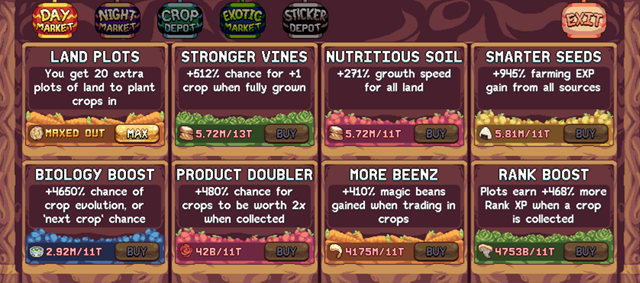